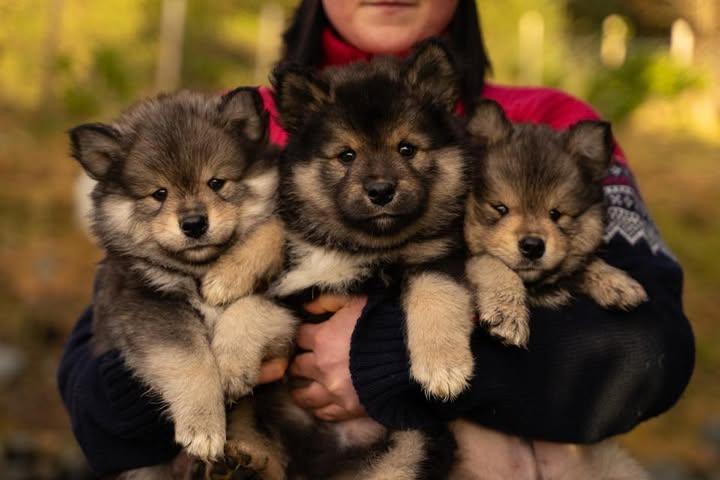

Finsk lapphund - oppdrett siden 2021

Velkommen . til hjemmesiden vår. Her finner du informasjon om hundene våre, kull, og etterkommere. Vi er en liten kennel med d godt gemytt, og legger stor vekt på helse, mentalitet og rasetypiske egenskaper.
For spørsmål om valper eller informasjon om planlagte kull, ta kontakt via Facebook-siden vår.
Under Våre hunder kan du lese om hundene som bor hos oss. Under Kull finner du oversikt over kullene våre. Under Etterkommere ser du hunder vi har gitt liv til som nå bor andre steder. Under Utstillinger ser du resultatene fra utstillingene vi har deltatt på.